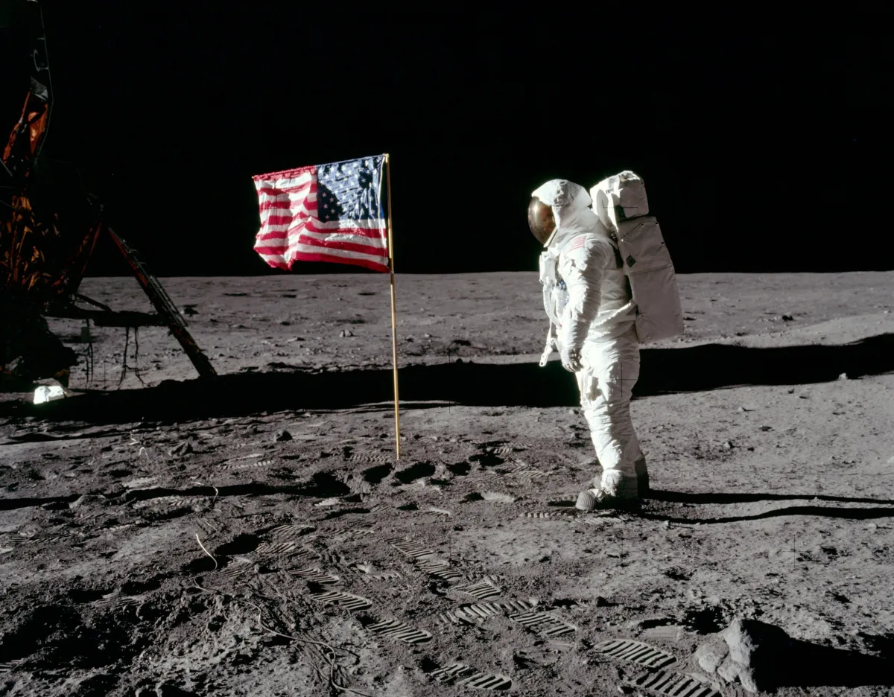

Latest Stories



A look at the Apollo 11 mission to land on the moon led by commander Neil Armstrong and pilots Buzz Aldrin and Mike Collins.
Read More >>
"I walked all the way [around Nottingham on a visit in 1996] and when I saw the stadium I
thought: 'Are you kidding me – this club won the European Cup? Twice?'"
José Mourinho, Manchester United manager
"I played for Bill Shankly and Bob Paisley but, without doubt, Cloughie was the best. I can't
remember ever having a tactical or coaching lesson from him, but as a football manager he was
second to none. He made us feel invincible. Every time we ran out there we thought we would
win."
Larry Lloyd, former Nottingham Forest defender
"Every day was a coaching lesson from Brian Clough and when he did come down to the training
ground for a 20–25 minute spell, you'd pick up enough in that time to do you a lifetime."
Martin O'Neill, former Nottingham Forest midfielder
"The game is full of bluffers, banging on about 'rolling your sleeves up', 'having the right
attitude' and 'taking some pride in the shirt you're wearing'. A manager or coach who trades in
those clichéd generalisations – and there are many of them – is missing the point. Brian Clough
dealt in detail, facts, specific incidents and invariably he got it right. Playing for him was
demanding. I loved it."
Roy Keane, former Nottingham Forest midfielder
The back story
Clough was an extraordinarily prolific – if somewhat outspoken – striker for home-town club
Middlesbrough, scoring 197 goals in 213 games. He netted 54 more in 61 matches for Sunderland
but had to retire at 29 after failing to overcome a cruciate injury sustained in 1962. After a
short stint as Sunderland youth team coach, he took charge of Hartlepools United aged 30 in
1965, making him the league's youngest manager. He switched to Derby County in 1967, where his
legend began in earnest.
The method
An autocrat with soft skills (as he famously said of resolving issues with players: "We talk
about it for 20 minutes and then we decide I was right"), Clough's sides played a straight 4-4-2
with an emphasis on passing football. Clough and assistant Peter Taylor made striker Trevor
Francis England's first £1m signing in 1979, yet their great skill was blending unconventional
talents and transforming unfancied players – John McGovern, John Robertson, Garry Birtles, Ian
Bowyer, Viv Anderson, Martin O'Neill – into world-beaters.
The take-home quotes
"If God had wanted us to play football in the clouds, he'd have put grass up there."
"I wouldn't say I was the best manager in the business. But I was in the top one."
"Rome wasn't built in a day. But I wasn't on that particular job."